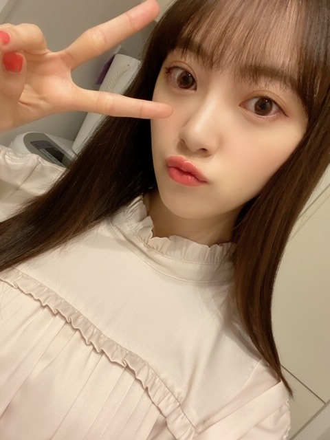
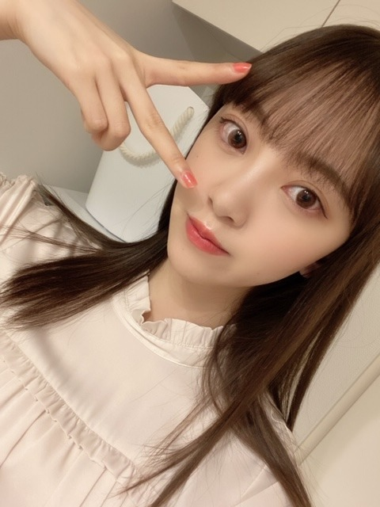
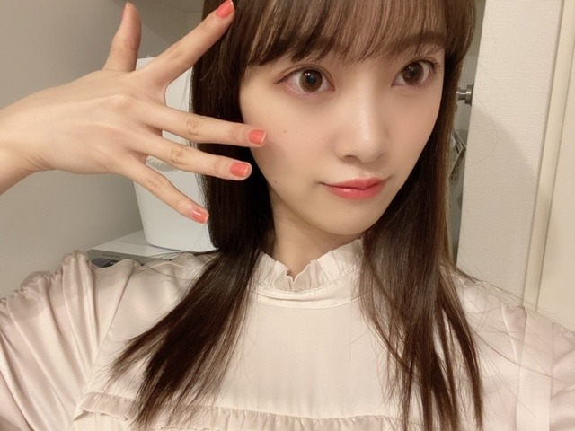
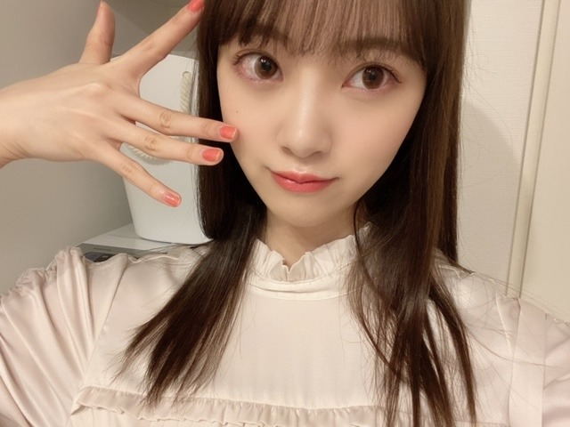

2020/0313Friアップルパイ
暖かくなり
花粉も多くなってきましたが
花粉症の皆さん大丈夫でしょうか？
私は結構きてます...うう...


アレルギーをたくさん持っているので
体質改善の為に漢方を飲み始めました!
苦くて粉薬飲めなかったけど、頑張ってます!
忘れないようにしないとっ
この間
レコメン！の皆さんに遅めのバレンタインで
ポテサラと煮込みハンバーグと玄米おにぎり
を作ったのですが
みなさんモリモリ食べてくださって嬉しかったです♡
春になるとお弁当作りたくなります...!
そして
3月いっぱいで
レコメン！を卒業することになりました☺︎
急なお知らせですみません
乃木ののから始まって
レコメン！では3年間も
のりさんとWパーソナリティをやらせていただき
ラジオに苦手意識があった私がラジオ大好きになったのは今までのラジオのおかけです!
毎週たくさん笑ったなぁ~
いっぱい素を出して楽しめました!
スタッフさんリスナーにみなさんには感謝の気持ちでいっぱいです☺︎
ちょっぴり寂しいけど残りも楽しみます
そして来週の水曜日はだいすきな絢音とみり愛も来てくれて、プリン会初集結になります(^-^)
楽しみ ぜひ聴いてください!
4月からは4期生の田村ちゃんに代わります✨
新しい風! まゆちゃんらしく楽しんでね!


20日19:00〜
テレビ朝日系列
アメトーク3時間spに絵心ない芸人で出演します!
芸人です!
うそです!
昨年に引き続きでした!
みなさん優しくて面白くて毎回楽しませていただいています~
ぜひぜひ
2020/03/13 14:36
コメント(322)
レコメン3年間お疲れ様！
毎週のりさんとの掛け合いが面白くて、未央奈の笑い方が大好きで、時折出る毒舌が最高でした。ただただ寂しいです。
未央奈の声が好きなので、またラジオを聞ける機会があるといいなー。そしてアナスターシャ100万再生おめでとう！
毎週のりさんとの掛け合いが面白くて、未央奈の笑い方が大好きで、時折出る毒舌が最高でした。ただただ寂しいです。
未央奈の声が好きなので、またラジオを聞ける機会があるといいなー。そしてアナスターシャ100万再生おめでとう！
未央奈～ こんにちは
ブログ更新ありがとうございます。
前回のブログ、レコメン聞きながらまいやんのソロ曲「じゃあね」を聞いて、「いい曲だなぁ」とコメントを送信した直後に、まさかの「レコメン卒業発表」。最後にビックリです。そんな時に限って、すぐにコメントが反映され、悔しかったです。
それにしても、もう３年も経つなんてびっくり、ということは「のぎの『の』」から「レコメン」に変わった時の「ラジオ番組」という雑誌の表紙を飾った時から３年ということ？早いですね。のりさんとのやりとりがあって当たり前の毎週だっただけに、まさか交代なんて‥‥、全く油断していました。のりさんに笑わされて、「ハッハッハッ」と笑い転げる未央奈の笑い声が大好きでした。そしてそのあとの「もーおー」も大好きでした。この笑い声にどれだけ、元気をもらったことか、本当にありがとうございました。
あと２回、楽しみたいと思います。特にプリン会、楽しみです。
ブログ更新ありがとうございます。
前回のブログ、レコメン聞きながらまいやんのソロ曲「じゃあね」を聞いて、「いい曲だなぁ」とコメントを送信した直後に、まさかの「レコメン卒業発表」。最後にビックリです。そんな時に限って、すぐにコメントが反映され、悔しかったです。
それにしても、もう３年も経つなんてびっくり、ということは「のぎの『の』」から「レコメン」に変わった時の「ラジオ番組」という雑誌の表紙を飾った時から３年ということ？早いですね。のりさんとのやりとりがあって当たり前の毎週だっただけに、まさか交代なんて‥‥、全く油断していました。のりさんに笑わされて、「ハッハッハッ」と笑い転げる未央奈の笑い声が大好きでした。そしてそのあとの「もーおー」も大好きでした。この笑い声にどれだけ、元気をもらったことか、本当にありがとうございました。
あと２回、楽しみたいと思います。特にプリン会、楽しみです。
遅めのバレンタインってバレンタインデーじゃないし、チョコじゃなくメニューも普通に料理やん。バレンタインの要素どこ～(笑)。
お料理もできて女子力高い未央奈ちゃんが憧れです
ピンクメイク大好きなので、Instagramであげてくださって本当に嬉しかったです
ヘアアレンジ動画も見てみたいです！！
いつも応援してます！！
ピンクメイク大好きなので、Instagramであげてくださって本当に嬉しかったです
ヘアアレンジ動画も見てみたいです！！
いつも応援してます！！
こんばんは。ブログ更新ありがとうございます。
私は花粉症歴50年です。最近は良い薬が効いていたのですが、今年は強力ですね～！！目も鼻もダメです。薬が切れると速攻かゆみとくしゃみが出ます。
ハンバーグ！！ポテサラ！！お腹が空いてきました！！
レコメン卒業おめでとうございます。またラジオでもテレビでも、何かしらのレギュラーをもらえると良いですね。
アメトーーク！録画予約しますね！！
ではまた。
私は花粉症歴50年です。最近は良い薬が効いていたのですが、今年は強力ですね～！！目も鼻もダメです。薬が切れると速攻かゆみとくしゃみが出ます。
ハンバーグ！！ポテサラ！！お腹が空いてきました！！
レコメン卒業おめでとうございます。またラジオでもテレビでも、何かしらのレギュラーをもらえると良いですね。
アメトーーク！録画予約しますね！！
ではまた。
花粉症で目が痒いし、鼻もムズムズですが、薬でなんとかなっています。
ラジオ卒業は寂しくもありますが、残りの回も楽しんでください。
のりさんとの掛け合いも面白いし、堀ちゃんの笑い声が好きでした。
ラジオ卒業は寂しくもありますが、残りの回も楽しんでください。
のりさんとの掛け合いも面白いし、堀ちゃんの笑い声が好きでした。
毎週レコメン!で堀ちゃんの元気な笑い声を聞くのが、一週間の活力でした。堀ちゃんのダブルパーソナリティー就任と同時にレコメンリスナーになってから、毎日が少し楽しくなりました。3年間、ありがとうございました。あと2回、楽しみます。
かわいいー
堀ちゃんの作った料理食べたい
アメトーーク観るの楽しみ
レコメン楽しみに聴いてだけど卒業・・・残念だけどお疲れ様でした
堀ちゃんの作った料理食べたい
アメトーーク観るの楽しみ
レコメン楽しみに聴いてだけど卒業・・・残念だけどお疲れ様でした
ジブリだけじゃなくて、スター・ウォーズサーガのサントラはキャラクターに合わせてテーマソングがあってライトモチーフにして、キャラソンで、実は秘密の繋がりがある登場人物達の別の曲を、違う音程で、ひとつの同じ曲になるように凄い工夫がされてた！ジョンウィリアムズ先生！
他にもアランシルベストリとかマイケルジアッキーノとか映画音楽がお気に入り・・・。
最近の映画的に、スター・ウォーズエピソード９を三回観たり、アイリッシュマンとゾンビランド２とミスターガラスと新聞記者を見ました。
因みに、ミッドサマーは、ギークな映画マニア向けの作品でした・・・。
バーズオブプレイは本国でも厳しい成績らしく・・・こうなったらＤＣ最新作ワンダーウーマン１９８４とＭＣＵ最新作ブラックウィドウに期待・・・！？クイーンからのナターシャだ・・・
待機作といえば、デューンのリブートがどうなるのかな・・・オスカー・アイザック主演・・・。
今週末も体調に気をつけて頑張りましょう！
他にもアランシルベストリとかマイケルジアッキーノとか映画音楽がお気に入り・・・。
最近の映画的に、スター・ウォーズエピソード９を三回観たり、アイリッシュマンとゾンビランド２とミスターガラスと新聞記者を見ました。
因みに、ミッドサマーは、ギークな映画マニア向けの作品でした・・・。
バーズオブプレイは本国でも厳しい成績らしく・・・こうなったらＤＣ最新作ワンダーウーマン１９８４とＭＣＵ最新作ブラックウィドウに期待・・・！？クイーンからのナターシャだ・・・
待機作といえば、デューンのリブートがどうなるのかな・・・オスカー・アイザック主演・・・。
今週末も体調に気をつけて頑張りましょう！
こんばんは、堀さん！
そうですね、春を感じますね。
今日もね、川沿いに咲いた菜の花にモンシロチョウがいっぱい飛んでいるのを見て、しばらく眺めていたいなとか思ったこれまでとくに花粉症にかかったことのないと思われる僕です！
レコメン、お疲れ様でした！
そして、今年もアメトーク、絵心のない芸人に出演されるのですね！観たいと思います
そうですね、僕は昔から絵を描くのが苦手で、そうですね、これまで美術等でほめられた覚えがなくてですね。
そうですね、それゆえ、花粉症にはかかったことがないからよくわからないのですけど、こと絵心がないというケースにおいては僕もまた、そうですね、絵心ない芸人、のような存在かもしれませんね
花粉症、よくなることを願っています。
どうか健康にはお気をつけてお過ごしください！
そうですね、春を感じますね。
今日もね、川沿いに咲いた菜の花にモンシロチョウがいっぱい飛んでいるのを見て、しばらく眺めていたいなとか思ったこれまでとくに花粉症にかかったことのないと思われる僕です！
レコメン、お疲れ様でした！
そして、今年もアメトーク、絵心のない芸人に出演されるのですね！観たいと思います
そうですね、僕は昔から絵を描くのが苦手で、そうですね、これまで美術等でほめられた覚えがなくてですね。
そうですね、それゆえ、花粉症にはかかったことがないからよくわからないのですけど、こと絵心がないというケースにおいては僕もまた、そうですね、絵心ない芸人、のような存在かもしれませんね
花粉症、よくなることを願っています。
どうか健康にはお気をつけてお過ごしください！
芸人括り ww
レコメンは寂しい。
レコメンは寂しい。
ラジオおつかれさま！
堀ちゃんこんばんは！
花粉の季節ですね〜、僕も結構きてます…！
この時期は花粉の匂いがし始めますよね〜、あのなんとも言えない匂い、特に夜とか( ´ ▽ ` )
あの匂いを感じると花粉症に怯えるとともに、春が近いことにも気付くので、プラマイゼロってところです笑
僕もアレルギー対策を長年やってきてます、今年はにんじんジュースでいこうと思っています！
花粉症は目と鼻の症状だけだと思われがちですが、鼻の調子が悪くなると喉も乾燥して炎症が起きて、体全体が不調になることもありますし、実はかなりツライですよね…！肌にも影響ありますし…！
少しでも花粉症が緩和されますように、お互いに( ´ ▽ ` )
レコメン!の卒業発表はとてもびっくりしました、正直かなり寂しいです…
のりさんと堀ちゃんの掛け合いが大好きでした
水曜日の夜は特別な時間でした
堀ちゃんの声を聴くと癒されて、あと2日頑張ろうと思えました
堀ちゃんの声が大好きです
ジングルを聴くとワクワクしましたし
のりさん「ラジオネーム◯◯」
堀ちゃん「◯◯」
という、たまにある何気ない復唱する流れがめちゃくちゃ好きでした( ´ ー ` )
寂しいなーーーーー笑
ただ、大好きな時間がなくなってしまうのは寂しいけれど、大前提として僕は堀ちゃんが大好きです！
レコメン!の堀ちゃんが大好きでしたが、この時間以外の堀ちゃんも当然大好きです( ´ ▽ ` )
堀ちゃんのレコメン!が聴けなくなるからといって、僕の堀ちゃんへの想いは変わらず、めちゃくちゃ大好きなままです(o^^o)
きっと、この寂しさも、堀ちゃんにから貰う楽しさや幸せで埋まっていくんだろうなと思います(^^)
今でもテレビ番組のときはもちろん、毎日ブログやモバメやSNSで、たくさんの楽しみを貰ってますから、間違いない未来です( ´ ▽ ` )
3年間ありがとう…は、まだ言いません、あと2週間全力で楽しんでから、心からお礼を言わせてください(^^)
来週はプリン会とプリン体のレコメン!楽しみにしてます！笑
では、またコメントさせてくださいー！
アメトークも楽しみです！
おやすみおな！( ´ ▽ ` )
花粉の季節ですね〜、僕も結構きてます…！
この時期は花粉の匂いがし始めますよね〜、あのなんとも言えない匂い、特に夜とか( ´ ▽ ` )
あの匂いを感じると花粉症に怯えるとともに、春が近いことにも気付くので、プラマイゼロってところです笑
僕もアレルギー対策を長年やってきてます、今年はにんじんジュースでいこうと思っています！
花粉症は目と鼻の症状だけだと思われがちですが、鼻の調子が悪くなると喉も乾燥して炎症が起きて、体全体が不調になることもありますし、実はかなりツライですよね…！肌にも影響ありますし…！
少しでも花粉症が緩和されますように、お互いに( ´ ▽ ` )
レコメン!の卒業発表はとてもびっくりしました、正直かなり寂しいです…
のりさんと堀ちゃんの掛け合いが大好きでした
水曜日の夜は特別な時間でした
堀ちゃんの声を聴くと癒されて、あと2日頑張ろうと思えました
堀ちゃんの声が大好きです
ジングルを聴くとワクワクしましたし
のりさん「ラジオネーム◯◯」
堀ちゃん「◯◯」
という、たまにある何気ない復唱する流れがめちゃくちゃ好きでした( ´ ー ` )
寂しいなーーーーー笑
ただ、大好きな時間がなくなってしまうのは寂しいけれど、大前提として僕は堀ちゃんが大好きです！
レコメン!の堀ちゃんが大好きでしたが、この時間以外の堀ちゃんも当然大好きです( ´ ▽ ` )
堀ちゃんのレコメン!が聴けなくなるからといって、僕の堀ちゃんへの想いは変わらず、めちゃくちゃ大好きなままです(o^^o)
きっと、この寂しさも、堀ちゃんにから貰う楽しさや幸せで埋まっていくんだろうなと思います(^^)
今でもテレビ番組のときはもちろん、毎日ブログやモバメやSNSで、たくさんの楽しみを貰ってますから、間違いない未来です( ´ ▽ ` )
3年間ありがとう…は、まだ言いません、あと2週間全力で楽しんでから、心からお礼を言わせてください(^^)
来週はプリン会とプリン体のレコメン!楽しみにしてます！笑
では、またコメントさせてくださいー！
アメトークも楽しみです！
おやすみおな！( ´ ▽ ` )
未央奈お疲れ様。
ブログ更新ありがとう！！
レコメン毎週水曜が楽しみでした…。
少し寂しくなりますね。
あと2回楽しい放送して下さい。
ブログ更新ありがとう！！
レコメン毎週水曜が楽しみでした…。
少し寂しくなりますね。
あと2回楽しい放送して下さい。
ブログ更新ありがとう！！！！！！！！
花粉すごいよね〜最近、、、、ほんと困っちゃう
アメトーク絶対見るねーーーー楽しみにしてる！！
花粉すごいよね〜最近、、、、ほんと困っちゃう
アメトーク絶対見るねーーーー楽しみにしてる！！
未央奈さんレコメンいつかラジオ 買って聴こうと思ったら卒業だってショック まだ聞いた事無いのでいつか聞いて見たかった。３年間お疲れさま 。アメトークはInstagram毎日チェックしてあるからこのブログより先に知りました。未央奈さん可愛い❤️大好き ♥️❤️です。推しメンだよ。未央奈さんが乃木坂46卒業して女優にもしなっても応援 。美人だから何時もモバメありがとう❤️。
堀さん、こんばんは。ブログ更新してくれてありがとうございます。
爪の色可愛いですね。それに指も堀さんもお美しい限りです。
先日やけに鼻の詰まった夜があって、試しに外干しだったシーツを掃除機で吸ったら一気にましになって、よく考えたらこの工程を3年連続でやってんなあって思いました。なので僕も軽度の花粉症です。僕は最近ビタミンＤ飲み始めました。効果はまだ感じられません。
レコメンに持って行った料理おいしく食べてもらえてよかったですね。堀さんにとって大事な場所だったから卒業は寂しいですよね。来週も再来週も必ず聞きますね。
あとアメトーク必ず見ますね。堀さんはメイクするのが上手だから、フェイスペインティングで人の顔面をキャンパスにすれば、ＭＣ左の絵心有り側に座れるかもしれませんね。
爪の色可愛いですね。それに指も堀さんもお美しい限りです。
先日やけに鼻の詰まった夜があって、試しに外干しだったシーツを掃除機で吸ったら一気にましになって、よく考えたらこの工程を3年連続でやってんなあって思いました。なので僕も軽度の花粉症です。僕は最近ビタミンＤ飲み始めました。効果はまだ感じられません。
レコメンに持って行った料理おいしく食べてもらえてよかったですね。堀さんにとって大事な場所だったから卒業は寂しいですよね。来週も再来週も必ず聞きますね。
あとアメトーク必ず見ますね。堀さんはメイクするのが上手だから、フェイスペインティングで人の顔面をキャンパスにすれば、ＭＣ左の絵心有り側に座れるかもしれませんね。
未央奈こんばんは！
レコメン
本当に感謝の気持ちでいっぱい。
たくさん、たくさん笑いました。
未央奈の笑い声に癒されました。
残り二回、
全力で笑います！
全力で楽しみます！
笑顔溢れる二回にしましょう！
プリン会集結楽しみ！
アメトーク いっぱい笑います！
未央奈は未央奈のままで、
最高の笑顔を！
レコメン
本当に感謝の気持ちでいっぱい。
たくさん、たくさん笑いました。
未央奈の笑い声に癒されました。
残り二回、
全力で笑います！
全力で楽しみます！
笑顔溢れる二回にしましょう！
プリン会集結楽しみ！
アメトーク いっぱい笑います！
未央奈は未央奈のままで、
最高の笑顔を！
僕も花粉で鼻水が…
お弁当の写真見たよ〜
おいしそうだった！特にハンバーグのお味が気になる笑
堀ちゃんの手料理食べてみたーい
レコメン卒業なんだね
堀ちゃんの声と絶妙に舌足らずな感じが好きだったよ
またラジオのお仕事があるといいね！
まゆたんにバトンタッチだね〜
まゆたんは声がかわいいから期待だね
アメトーーク再び出演おめでとう！
予告に堀ちゃん映っていて嬉しかったよ〜
本編もしっかり観るね
堀ちゃんの画伯ぶりに期待です笑
では、またね
お弁当の写真見たよ〜
おいしそうだった！特にハンバーグのお味が気になる笑
堀ちゃんの手料理食べてみたーい
レコメン卒業なんだね
堀ちゃんの声と絶妙に舌足らずな感じが好きだったよ
またラジオのお仕事があるといいね！
まゆたんにバトンタッチだね〜
まゆたんは声がかわいいから期待だね
アメトーーク再び出演おめでとう！
予告に堀ちゃん映っていて嬉しかったよ〜
本編もしっかり観るね
堀ちゃんの画伯ぶりに期待です笑
では、またね
未央奈、安定の綺麗さ！
美女すぎて困っちゃう(^_^*)
美女すぎて困っちゃう(^_^*)
堀ちゃん ブログ更新 ありがとう！！ (^_-)-☆
まだまだ 寒いね！！
水仕事（洗い物など）すると 手が凍える！！
レコメン！ お疲れ様！！
お体を大切に！！ お元気で ばいばい (@^^)/~~~
ps1:4/3（金） MUSIC STATION 3時間スペシャル
まだ先なので、録画予約できません！！
ps2:4/1の ◇◆◇田植え◇◆◇ に向け準備中 畔の草刈りから。
桜が咲く頃には この辺り 黄緑色←苗の色 に染まるんだよ！！
↑↑僕の最近！！ (^。^)y-.。o○
まだまだ 寒いね！！
水仕事（洗い物など）すると 手が凍える！！
レコメン！ お疲れ様！！
お体を大切に！！ お元気で ばいばい (@^^)/~~~
ps1:4/3（金） MUSIC STATION 3時間スペシャル
まだ先なので、録画予約できません！！
ps2:4/1の ◇◆◇田植え◇◆◇ に向け準備中 畔の草刈りから。
桜が咲く頃には この辺り 黄緑色←苗の色 に染まるんだよ！！
↑↑僕の最近！！ (^。^)y-.。o○
俺生まれてこのかた 花粉症っていまいちなんだかわからない笑 未央奈アレルギー可哀想だなぁ…
レコメン卒業すんのかぁさみちぃ… 最後まで聴かなきゃだな！ 未央奈今日も可愛いな ！
レコメン卒業すんのかぁさみちぃ… 最後まで聴かなきゃだな！ 未央奈今日も可愛いな ！
おはようございます。と言うよりかなり久々なコメントです。
みおにゃ〜、花粉辛い季節になってきたね。(T . T)
この季節はよく涙目になるんだよね…
でも！！最近は毎日泣いてます。それは何故か？
花粉症だからではないんですよ…理由は…？
ドン！！こちら↓
アナスターシャ、素敵な曲ですよね。二期生が大好きな私には、この曲は神曲となりました。MVを見ては泣いてしまいます。素敵過ぎて毎日見ては泣いてます。(T . T)(T . T)
今回、久々に乃木坂のライブとして二期生ライブに行く予定にしてたのですが、このご時世…中止は仕方ないけど残念過ぎでした。
でもショールーム配信での二期生ライブを見れて本当に良かった。しかも最終42万人超えの視聴者！！伝説ですよ！！
乃木坂が！いや、乃木坂二期生が作った記録だ！！と二期生ライブをこれほどの人に見てもらえて本当に嬉しかったです。これからまた二期生旋風を巻き起こしてください！！応援します。
レコメン、もう少しなのですね。最後までファイティン！！
みおにゃ〜、花粉辛い季節になってきたね。(T . T)
この季節はよく涙目になるんだよね…
でも！！最近は毎日泣いてます。それは何故か？
花粉症だからではないんですよ…理由は…？
ドン！！こちら↓
アナスターシャ、素敵な曲ですよね。二期生が大好きな私には、この曲は神曲となりました。MVを見ては泣いてしまいます。素敵過ぎて毎日見ては泣いてます。(T . T)(T . T)
今回、久々に乃木坂のライブとして二期生ライブに行く予定にしてたのですが、このご時世…中止は仕方ないけど残念過ぎでした。
でもショールーム配信での二期生ライブを見れて本当に良かった。しかも最終42万人超えの視聴者！！伝説ですよ！！
乃木坂が！いや、乃木坂二期生が作った記録だ！！と二期生ライブをこれほどの人に見てもらえて本当に嬉しかったです。これからまた二期生旋風を巻き起こしてください！！応援します。
レコメン、もう少しなのですね。最後までファイティン！！
未央奈俺にも弁当作ってよ～(;_;)(;_;)
食べたーい(;_;)(;_;)
食べたーい(;_;)(;_;)
おはよ
最近、いろんなイベント、
エンターテイメントが中止になり、
外出もあまり出来ないので
凄くストレスがたまってます
いつまで続くんだ？この状況
まさか、握手会までなくなったり
しないよね？
あ〜毎日、イライラしながら
過ごしてます
一日曜でも早く事態が収束するよう
願ってます
最近、いろんなイベント、
エンターテイメントが中止になり、
外出もあまり出来ないので
凄くストレスがたまってます
いつまで続くんだ？この状況
まさか、握手会までなくなったり
しないよね？
あ〜毎日、イライラしながら
過ごしてます
一日曜でも早く事態が収束するよう
願ってます
レコメン寂しいですアメトーク楽しみにしてる！
堀ちゃん、ブログ更新ありがとう〜
堀ちゃんレコメン卒業するけど、
乃木坂は卒業しないよね！
心配で、心配で、、、
花粉いっぱい飛んでるけど、
体調気をつけねー
堀ちゃん、大好きだよー
堀ちゃんレコメン卒業するけど、
乃木坂は卒業しないよね！
心配で、心配で、、、
花粉いっぱい飛んでるけど、
体調気をつけねー
堀ちゃん、大好きだよー
未央奈ちゃん更新ありがとー！
花粉症大変だよね。
自分も毎日 鼻と目がかゆくてかゆくて…。
漢方とか試してみようかなー。
レコメン卒業おめでとう。
(おめでとうでいいのかな？)
正直寂しいよー。
残り大切に聴きたいと思います。
プリン会めっちゃ楽しみ！
後輩へのバトンタッチ見届けます！
そして、これからも毎週レコメンを聴こうと思います。
アメトーク楽しみにしてるね
ではでは～
花粉症大変だよね。
自分も毎日 鼻と目がかゆくてかゆくて…。
漢方とか試してみようかなー。
レコメン卒業おめでとう。
(おめでとうでいいのかな？)
正直寂しいよー。
残り大切に聴きたいと思います。
プリン会めっちゃ楽しみ！
後輩へのバトンタッチ見届けます！
そして、これからも毎週レコメンを聴こうと思います。
アメトーク楽しみにしてるね
ではでは～
ブログ更新ありがとう〜⸜❤︎⸝
レコメンお疲れ様でした！最後まで頑張ってください！
プリン会の聞きます！
ずっと応援してます！大好きだよ⸜❤︎⸝
レコメンお疲れ様でした！最後まで頑張ってください！
プリン会の聞きます！
ずっと応援してます！大好きだよ⸜❤︎⸝
俺も漢方飲んでます！！
未央奈は何の漢方飲んでるの？？
未央奈は何の漢方飲んでるの？？
漢方って、小青竜湯？
甘草や麻黄が入っている漢方薬はあまり長期間飲むと副作用のリスクがあるから気を付けて。
甘草や麻黄が入っている漢方薬はあまり長期間飲むと副作用のリスクがあるから気を付けて。
アップルパイ食べたい！
堀ちゃん、おはよう。
気のせいか、今年は花粉の症状がわりと軽い気がする。
それとも、これから本領を発揮するのかな。
花粉症にしても風邪にしても、相当症状が重くならない限り僕は薬を滅多に飲まないけれど、比較的体調不良になることが少ない自分の体質に安心感を覚える。
レコメンおつかれさまでした。
堀ちゃんも次第にお仕事忙しくなってきて、次のステップアップのためのチェンジなのかな。
アメトーク絵心ない芸人、いつかいくちゃんとたまちゃんも引き連れて、乃木坂画伯強化メンバーでぜひ♪
気のせいか、今年は花粉の症状がわりと軽い気がする。
それとも、これから本領を発揮するのかな。
花粉症にしても風邪にしても、相当症状が重くならない限り僕は薬を滅多に飲まないけれど、比較的体調不良になることが少ない自分の体質に安心感を覚える。
レコメンおつかれさまでした。
堀ちゃんも次第にお仕事忙しくなってきて、次のステップアップのためのチェンジなのかな。
アメトーク絵心ない芸人、いつかいくちゃんとたまちゃんも引き連れて、乃木坂画伯強化メンバーでぜひ♪
みおな！アメトークの予告見ました
三つ編みとベレー帽可愛いです！
レコメンを卒業されるんですね…とても寂しいです
みおなの言葉と可愛さにいつも元気をもらっていました。のこりのレコメンも絶対ききます！
あと少しですが楽しんで下さい！
三つ編みとベレー帽可愛いです！
レコメンを卒業されるんですね…とても寂しいです
みおなの言葉と可愛さにいつも元気をもらっていました。のこりのレコメンも絶対ききます！
あと少しですが楽しんで下さい！
みおなちゃん、おはようございます。
レコメンお疲れ様でした。残り２回、楽しんでね。
２０日のアメトーク3時間sp、絶対見るね。楽しみにしてます。
2枚目の写真のみおなちゃん、めっちゃ綺麗で、めっちゃかわいいです。
みおなちゃん、体調に気をつけて仕事頑張ってね。
またコメントするね。
レコメンお疲れ様でした。残り２回、楽しんでね。
２０日のアメトーク3時間sp、絶対見るね。楽しみにしてます。
2枚目の写真のみおなちゃん、めっちゃ綺麗で、めっちゃかわいいです。
みおなちゃん、体調に気をつけて仕事頑張ってね。
またコメントするね。
みおなちゃん、大好きです
みおなブログ更新ありがとう
アメトーク見るね！
今のネイルの色すっごく可愛いし似合ってる
体調に気を付けて頑張ってね☺️
アメトーク見るね！
今のネイルの色すっごく可愛いし似合ってる
体調に気を付けて頑張ってね☺️
ブログ更新ありがとう！！！！！！！！
花粉すごいよね〜最近、、、、ほんと困っちゃう
アメトーク絶対見るねーーーー楽しみにしてる！！
花粉すごいよね〜最近、、、、ほんと困っちゃう
アメトーク絶対見るねーーーー楽しみにしてる！！
未央奈さんブログ更新ありがとうございます。レコメン卒業だって寂しい ⤵️。アレルギーは辛いよね。僕はアトピーがある。何時もモバメありがとう❤️。未央奈さん可愛い❤️な。何時も未央奈さんのInstagram毎日チェックしてるよ。アメトークは楽しみです。忙しいのに乃木坂46さんの美人さん。僕は未央奈さん するね。
ハッピーホワイトデー！！
今の携帯の待ち受けがバレンタインに送ってくれたおにぎり食べてるみおちゃんの写真だから毎日がバレンタイン気分なんだけどね〜☺️
ゴルゴンゾーラ聴こっと♪
からのAm I loving?
アップルパイ！ほぉ！
そうそう！花粉ね、名古屋きたら意外と大丈夫なんよ！土地によって種類が違うからなのかな、神奈川にいたときは鼻が真っ赤になってたのに、、
マスク不足もあるし花粉症にはつらい状況！
負けるな〜！(ここにきて根性論。笑
春らしい服やね✨
いつもかわいいみおちゃんの写真をありがと。
漢方かぁ。カラダに良いってよく聞くね。
大好きなみおちゃん！無理しすぎずに身体を大切にねっ♪(急にお母さん目線)
お弁当！
ほんと、うらやましかったー！！！
こっちがチャーハン弁当作るから、みおちゃんのお弁当ください♡笑
レコメン！大好きです。。
たくさん笑ったー！(^-^)
卒業って言葉を聞くと過敏に反応してしまうのはファンのみんながみおちゃんのことが大好きだからこそ。
乃木のの もおもろかったなぁ。
みおちゃんの声とか笑い声とか聴いて今こんな表情してるのかな。とか想像してニヤニヤするのが癒しでした！なんか文章で書くと。。笑
のりん会楽しみ！ ん？
プリン会超楽しみ！！！
我らが乃木坂のエースの今後の活躍に期待してますっ！次期エースいっぱいになったみたいだからもうエースちゃん？(個人的な意見です。笑
絵心ない芸人！超楽しみ！笑
最高の回よ！よっ、芸人さん！
りょ！
みるみる
今の携帯の待ち受けがバレンタインに送ってくれたおにぎり食べてるみおちゃんの写真だから毎日がバレンタイン気分なんだけどね〜☺️
ゴルゴンゾーラ聴こっと♪
からのAm I loving?
アップルパイ！ほぉ！
そうそう！花粉ね、名古屋きたら意外と大丈夫なんよ！土地によって種類が違うからなのかな、神奈川にいたときは鼻が真っ赤になってたのに、、
マスク不足もあるし花粉症にはつらい状況！
負けるな〜！(ここにきて根性論。笑
春らしい服やね✨
いつもかわいいみおちゃんの写真をありがと。
漢方かぁ。カラダに良いってよく聞くね。
大好きなみおちゃん！無理しすぎずに身体を大切にねっ♪(急にお母さん目線)
お弁当！
ほんと、うらやましかったー！！！
こっちがチャーハン弁当作るから、みおちゃんのお弁当ください♡笑
レコメン！大好きです。。
たくさん笑ったー！(^-^)
卒業って言葉を聞くと過敏に反応してしまうのはファンのみんながみおちゃんのことが大好きだからこそ。
乃木のの もおもろかったなぁ。
みおちゃんの声とか笑い声とか聴いて今こんな表情してるのかな。とか想像してニヤニヤするのが癒しでした！なんか文章で書くと。。笑
のりん会楽しみ！ ん？
プリン会超楽しみ！！！
我らが乃木坂のエースの今後の活躍に期待してますっ！次期エースいっぱいになったみたいだからもうエースちゃん？(個人的な意見です。笑
絵心ない芸人！超楽しみ！笑
最高の回よ！よっ、芸人さん！
りょ！
みるみる
未央奈さんブログ更新ありがとうございます。レコメン卒業だって寂しい ⤵️。アレルギーは辛いよね。僕はアトピーがある。何時もモバメありがとう❤️。未央奈さん可愛い❤️な。何時も未央奈さんのInstagram毎日チェックしてるよ。アメトークは楽しみです。忙しいのに乃木坂46さんの美人さん。僕は未央奈さん するね。
みおなちゃん更新ありがとう☺
私も花粉症です..(; ;)
お互いに乗り越えましょう！
アメトーク、楽しみです♪
私も花粉症です..(; ;)
お互いに乗り越えましょう！
アメトーク、楽しみです♪
みおな、こんにちは。
レコメン卒業、寂しいな。
水曜日は、レコメンからのANNという流れがあったのに。
また、新しい番組が持てるといいですね。
レコメン卒業、寂しいな。
水曜日は、レコメンからのANNという流れがあったのに。
また、新しい番組が持てるといいですね。
こんにちは〜
、、今日は、、雨のホワイトデー、、だね〜
、、花粉症、、は、、ヨーグルトが、、効く時が、、あるよ〜
、、ビヒダスが、、イイダス。。（笑）
、、じゃあ、、またね〜
、、今日は、、雨のホワイトデー、、だね〜
、、花粉症、、は、、ヨーグルトが、、効く時が、、あるよ〜
、、ビヒダスが、、イイダス。。（笑）
、、じゃあ、、またね〜
みおなーー！！
花粉症じゃないからわからんけど、辛いんだろうね…
薬飲むの頑張って〜！
レコメンお疲れ様でした！
今までありがと！
寂しいね、、
アメトーク楽しみにしとく！
前回のも家族で見てて、この子可愛いね。って言われてめっちゃ嬉しかった笑
乃木坂って画伯多くない？
そのなかでもみおながでるってのが嬉しい！
絶対見るーー！
これからも頑張ってね！
応援してます！
花粉症じゃないからわからんけど、辛いんだろうね…
薬飲むの頑張って〜！
レコメンお疲れ様でした！
今までありがと！
寂しいね、、
アメトーク楽しみにしとく！
前回のも家族で見てて、この子可愛いね。って言われてめっちゃ嬉しかった笑
乃木坂って画伯多くない？
そのなかでもみおながでるってのが嬉しい！
絶対見るーー！
これからも頑張ってね！
応援してます！
ブログ更新、ありがとー！
お弁当、ホント美味しそうだった！
レコメン、３年間お疲れ様でした。
ファンとしては、
来月から水曜の生きがいが無くなっちゃうけど、
次なる飛躍の場とそこから届けてくれる笑顔、
楽しみにまってる！
花粉症、目がヤバイです…。
お弁当、ホント美味しそうだった！
レコメン、３年間お疲れ様でした。
ファンとしては、
来月から水曜の生きがいが無くなっちゃうけど、
次なる飛躍の場とそこから届けてくれる笑顔、
楽しみにまってる！
花粉症、目がヤバイです…。
レコメン卒業と聞いて、まさか‼️乃木坂は卒業しないよね⁉️
未央奈推しの俺の友達が悲しむのでまだいてください。自分は推しの白石様が卒業で頭がいっぱいです。
コロナ流行っていて二期生ライブが中止になったりしてますがどうか乃木坂のメンバー、スタッフさん、ファンはかかりませんように。また全握でメンバーと会いたいです
未央奈推しの俺の友達が悲しむのでまだいてください。自分は推しの白石様が卒業で頭がいっぱいです。
コロナ流行っていて二期生ライブが中止になったりしてますがどうか乃木坂のメンバー、スタッフさん、ファンはかかりませんように。また全握でメンバーと会いたいです
未央奈ちゃんブログ更新ありがとう。レコメン3月で卒業か。本当にお疲れ様でした。
「幻の２期生ライブ」SHOWROOM配信見させていただきました。
僕もチケット当選してたから中止は残念だったけど、配信ライブってのは乃木坂初になるのかな？それを見れたのはよかったし楽しかったよ。
アナスターシャもゆっくりと咲く花もいい曲だね。
アナスターシャMVは伊藤衆人監督の作品だけど、もういない２期生メンバーのこともわかる人にはわかるって感じで入れてるのが、さすが２期生を初期から見続けてきた衆人監督って感じ。
ゆっくりと咲く花は、こりゃ君たちは泣くだろうなと思う(笑)
この曲がどんな形で僕らんとこへ届くのか。楽しみにしてます。
そして、あらたな２期生ライブの開催も待ってるよ。
まいちゅんのANN続投も決まったみたいだし、ニッポン放送にはまたひと肌脱いでもらわないと(笑)
僕もチケット当選してたから中止は残念だったけど、配信ライブってのは乃木坂初になるのかな？それを見れたのはよかったし楽しかったよ。
アナスターシャもゆっくりと咲く花もいい曲だね。
アナスターシャMVは伊藤衆人監督の作品だけど、もういない２期生メンバーのこともわかる人にはわかるって感じで入れてるのが、さすが２期生を初期から見続けてきた衆人監督って感じ。
ゆっくりと咲く花は、こりゃ君たちは泣くだろうなと思う(笑)
この曲がどんな形で僕らんとこへ届くのか。楽しみにしてます。
そして、あらたな２期生ライブの開催も待ってるよ。
まいちゅんのANN続投も決まったみたいだし、ニッポン放送にはまたひと肌脱いでもらわないと(笑)


レコメン、お疲れ様でした
ノリさんとの掛け合いとても好きでしたよ〜。
花粉症大変ですね。気をつけてください